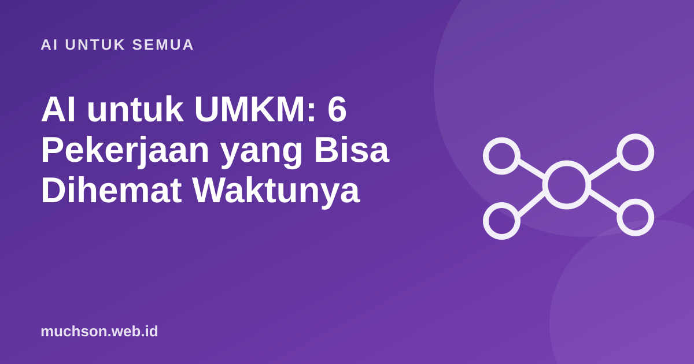

Beranda › Artikel › AI untuk Semua
AI untuk SemuaAI untuk UMKM: 6 Pekerjaan yang Bisa Dihemat Waktunya
Pemilik UMKM biasanya mengurus semuanya sendirian: produksi, melayani pelanggan, promosi, dan pembukuan. AI tidak menggantikan Anda, tetapi bisa mengambil pekerjaan administratif yang menguras waktu, asal dipakai dengan hati-hati.

Enam pekerjaan yang paling cocok
| Pekerjaan | Bantuan AI | Yang tetap harus Anda periksa |
|---|---|---|
| Caption dan ide konten | Membuat draf, variasi, dan kalender konten | Nada sesuai merek, klaim produk |
| Balasan pelanggan | Draf jawaban pertanyaan umum | Harga, stok, janji pengiriman |
| Deskripsi produk | Menulis dan merapikan deskripsi | Kebenaran spesifikasi dan bahan |
| Rekap dan ringkasan | Merangkum catatan penjualan atau ulasan | Angka dan kesimpulan |
| Brainstorming | Nama produk, paket, promo | Kelayakan dan margin |
| Template dokumen | Draf surat penawaran, kontrak sederhana | Isi hukum, konsultasikan bila penting |
Hitung potensi hemat waktu
Perhatikan privasi pelanggan
Jangan memasukkan data pelanggan (nama, alamat, nomor telepon) atau informasi keuangan rahasia ke chatbot publik. Samarkan datanya, atau gunakan layanan bisnis dengan kebijakan privasi yang jelas.
Mulai dari yang kecil
Tanya jawab
Apakah AI menggantikan karyawan?
Pada UMKM, AI lebih sering mengurangi beban administratif sehingga tim fokus pada pelanggan dan produk. Keputusan dan hubungan pelanggan tetap manusiawi.
Apakah perlu berlangganan berbayar?
Mulailah dengan versi gratis untuk menguji. Berlangganan bila manfaatnya jelas dan Anda memakainya rutin.
Bagaimana dengan balasan otomatis ke pelanggan?
Otomasi penuh berisiko bila AI salah menjawab harga atau stok. Mulailah dengan draf yang Anda setujui, baru pertimbangkan otomasi terbatas.